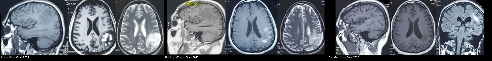
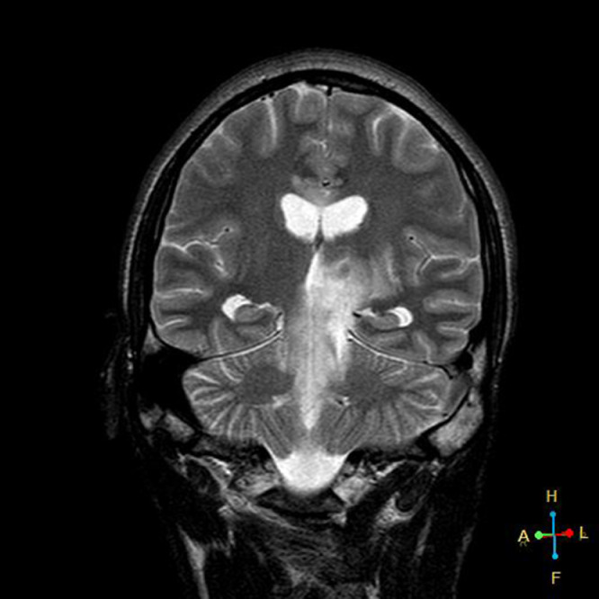
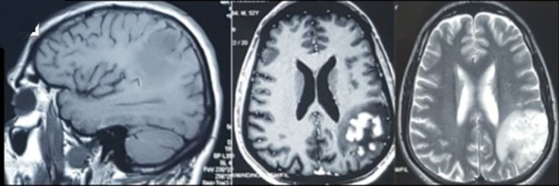
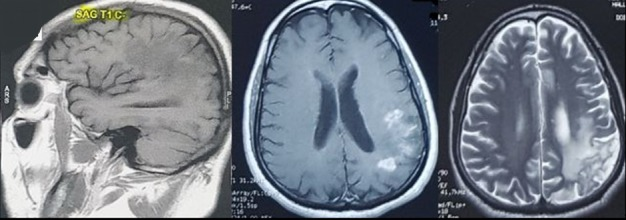
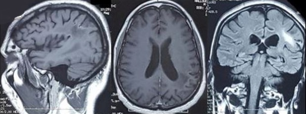
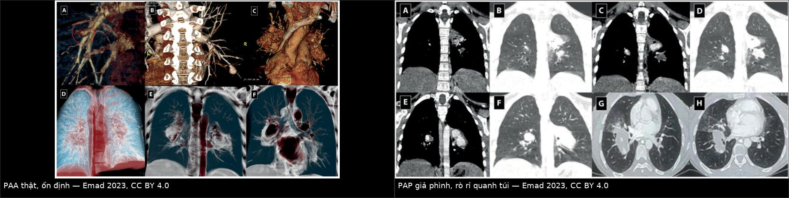

203 — Neuro-Behçet & Behçet mạch máu lớn: đồi thị–thân não "thác nước" và phình/giả phình động mạch phổi
Tags: pattern:ton-thuong-doi-thi-than-nao vung:nao-than-nao pattern:phinh-mach vung:dong-mach-phoi protocol:MRI-DWI protocol:CTPA
Mức chắc chắn (certainty): tổng hợp y văn (literature synthesis) — ghép 2 ca nguyên văn mở (Pan Afr Med J 2019, CC BY 4.0; Radiol Case Rep 2022, CC BY-NC-ND 4.0) với atlas CTPA 42 bệnh nhân Behçet (Sarcoidosis Vasc Diffuse Lung Dis 2023, CC BY 4.0); phần điều trị là khung tổng hợp, không phải ca đơn lẻ.
1. Tổng quan — vì sao Behçet đánh vào cả não lẫn mạch lớn
- Bệnh Behçet (Behçet disease, BD) là viêm mạch biến thể (variable vessel vasculitis) — khác các viêm mạch "một cỡ mạch" như TAK/GCA, BD có thể viêm động mạch lớn, động mạch nhỏ và tĩnh mạch cùng lúc, và ưu tiên tĩnh mạch. Vì vậy một bệnh nhân có thể vừa có tổn thương nhu mô não vừa có huyết khối xoang màng cứng vừa có phình động mạch phổi — bài này gom cả ba vào một khung đọc.
- Tần suất thần kinh: biểu hiện thần kinh gặp 1–59% tùy series; thể nhu mô (parenchymal) và ngoài nhu mô (extra-parenchymal) cộng lại được báo cáo 5,3% đến hơn 50% (Pan Afr Med J 2019, PMC6814321). Thể giả u (pseudotumoral) thì hiếm — chính vì hiếm nên dễ bị mổ nhầm thành u thần kinh đệm.
- TẠI SAO MRI là chốt, và TẠI SAO tín hiệu lại như vậy:
- Viêm quanh tĩnh mạch + phù mô kẽ (vasogenic edema) → T2/FLAIR tăng tín hiệu, T1 giảm/đồng tín hiệu, bờ không rõ, có thể phù lan rộng + hiệu ứng choán chỗ (giả u).
- Hàng rào máu–não vỡ cục bộ → ngấm thuốc dạng nốt/mảng thì muộn; mức ngấm giảm dần khi viêm được kiểm soát nên đây là dấu theo dõi đáp ứng.
- KHÔNG hạn chế khuếch tán (no restricted diffusion) trên DWI/ADC ở ca nguyên văn (Pretorius 2022, PMC8688177) — vì phù mạch (vasogenic), không phải độc tế bào (cytotoxic). Đây là điểm phân biệt cơ học với nhồi máu và áp-xe.
- Dấu "thác nước"/"thác đổ" (waterfall sign / cascade sign) trên T2 coronal: tăng tín hiệu liên tục từ đồi thị → cuống đại não → cầu, chạy dọc theo bó sợi — dấu gợi ý mạnh neuro-Behçet và rất khó giải thích bằng một ổ nhồi máu đơn lẻ.
- TẠI SAO mạch lớn cũng là chuyện của Behçet: viêm lớp giữa (vasa vasorum) → phá hủy thành → phình thật, hoặc vỡ khu trú được bọc lại → giả phình (pseudoaneurysm); kèm huyết khối tại chỗ (in-situ thrombosis) do viêm nội mạc. Trong atlas 42 bệnh nhân Behçet có tổn thương mạch phổi: huyết khối tĩnh mạch sâu 73,8%, huyết khối động mạch 31%, phình động mạch ngoại vi 28,5%, ho máu 90,5% và ho máu tử vong 19% (Emad 2023, PMC10540716).
- Vì sao phải phân biệt phình thật vs giả phình phổi: trên cùng 42 bệnh nhân, CTPA cho phình thật ổn định 31%, phình thật không ổn định 26,2%, giả phình ổn định 16,7%, giả phình không ổn định 40,5% — nhóm giả phình có rò rỉ quanh túi (perianeurysmal leakage) là nhóm dọa vỡ, cần can thiệp sớm chứ không "theo dõi định kỳ".
2. Mẫu hình + chẩn đoán phân biệt theo vị trí (gamut)
Ba tầng tổn thương — hỏi lần lượt, đừng gộp:
- Tầng nhu mô (parenchymal): đồi thị, nhân nền, bao trong sau, cuống đại não (mesencephalon), cầu, diencephalon — vị trí kinh điển; tổn thương một bên hoặc hai bên không đối xứng, T2 sáng, T1 tối, ngấm thuốc, có thể giả u.
- Tầng màng não–tĩnh mạch (extra-parenchymal): huyết khối xoang màng cứng (thường xoang dọc trên), viêm màng não vô khuẩn, tăng áp lực nội sọ lành tính — hình ảnh không có ổ nhu mô, chẩn đoán bằng MRV/CTV.
- Tầng động mạch lớn (large-vessel): phình/giả phình động mạch phổi (thể Hughes–Stovin), phình ĐMC, phình động mạch ngoại vi, huyết khối động mạch — chẩn đoán bằng CTPA/CTA, không bằng MRI não.
Gamut "tổn thương đồi thị–thân não" (theo cơ chế):
- Viêm: neuro-Behçet (đứng đầu khi bệnh cảnh gợi ý) · sarcoid thần kinh · lupus (NPSLE) · ADEM.
- Khử myelin: MS (ổ nhỏ, quanh não thất, "Dawson fingers", lan dọc trục ngắn) · NMOSD (diện não thất, đồi thị có thể) · MOGAD.
- Mạch máu: nhồi máu đồi thị (theo lãnh thổ, hạn chế khuếch tán thật, hình chêm) · huyết khối tĩnh mạch sâu nội sọ (đồi thị hai bên, có xuất huyết) · bệnh mạch máu nhỏ.
- U/hàng giả u: u thần kinh đệm (thể giả u của neuro-Behçet bắt chước) · lymphoma (ngấm đồng nhất, hạn chế khuếch tán) · di căn.
- Nhiễm: áp-xe (viền ngấm, hạn chế khuếch tán trung tâm) · viêm não · lao.
3. Bảng so sánh phân biệt (ma trận đối chiếu)
| Thực thể (entity) | Hình ảnh điển hình | Chốt vào (rule-in) | Chốt loại (rule-out) | Gợi ý xác nhận |
|---|---|---|---|---|
| Neuro-Behçet nhu mô | Đồi thị/bao trong sau/cuống đại não/cầu, T2–FLAIR sáng, T1 tối, ngấm nốt/mảng, có thể giả u + phù; coronal T2 "thác nước" | Loét miệng tái diễn + loét sinh dục/viêm mắt + tổn thương đồi thị–thân não không theo lãnh thổ | Hạn chế khuếch tán rõ + hình chêm theo mạch → nhồi máu; ổ quanh não thất nhỏ kiểu MS | MRI não có DWI/ADC + T1 sau tiêm, coronal T2; MRV loại huyết khối xoang |
| Neuro-Behçet mạch (CVST) | Khuyết thuốc xoang dọc trên trên CTV/MRV, nhồi máu không theo lãnh thổ, có thể xuất huyết; không có ổ nhu mô đặc hiệu | Đau đầu tăng dần + phù gai + yếu tố tăng đông âm tính + Behçet đã biết | Ổ nhu mô T2 sáng điển hình đồi thị → thể nhu mô | MRV/CTV bắt buộc; D-dimer không loại trừ |
| U thần kinh đệm (glioma) | Khối một ổ, phù quanh, ngấm vòng/không đều, hiệu ứng choán chỗ tiến triển | Tiến triển trên 2 lần chụp cách 4–8 tuần, ngấm kiểu u, không đáp ứng corticoid liều cao | Đáp ứng nhanh sau 3–5 ngày methylprednisolone nghiêng về viêm; "thác nước" dọc bó sợi nghiêng về NBD | MRI tưới máu (u tăng tưới máu), không sinh thiết ngay khi bệnh cảnh Behçet rõ |
| MS / ADEM | Ổ quanh não thất, thân chẩn đoán McDonald, lan dọc trục ngắn, ít phù | Tiền sử các đợt thần kinh phân ly theo thời gian, dải Oligoclonal IgG trong LCR | Tổn thương đồi thị–cuống đại não một bên, phù mạnh, "thác nước" → NBD | MRI não + tủy sống, LCR (OCB), evoked potentials |
| Behçet phổi — PAA thật | Túi phình thành mạch rõ, huyết khối trong lòng chiếm phần lớn túi, bờ nhẵn, không rò rỉ | Định kỳ CTPA ổn định ≥ 6 tháng, kích thước không đổi | Máu tụ quanh túi, bờ mờ, đổi hình giữa 2 thì → giả phình | CTPA có thì động mạch + thì muộn; so sánh chính xác cùng mặt cắt |
| Behçet phổi — PAP (giả phình) | Rò rỉ quanh túi (perianeurysmal leakage), máu tụ/alveolar haemorrhage quanh, lõm vào phế quản (bronchial indentation) | Ho máu + túi mạch có quầng máu quanh, bờ không rõ | Túi bờ nhẵn, không quầng, ổn định → phình thật | CTPA khẩn; không chọc/xử lý như nốt phổi thường |

Ba thời điểm của cùng một bệnh nhân: khởi phát (T1/T1+Gd/T2: ổ giảm tín hiệu T1, tăng tín hiệu T2 ở đồi thị và bao trong sau), đợt hoạt động (nốt mới + phù quanh ổ — dù đã 3 bolus corticoid), sau điều trị (thoái lui). Nguồn: Guini M et al., Pan Afr Med J 2019 (PMC6814321) Fig. 1–3, CC BY 4.0. Ảnh ghép letterbox, không crop/kéo giãn.Đọc dấu "thác nước" cho đúng
- Coronal T2/FLAIR là mặt cắt bắt buộc khi nghi neuro-Behçet: tăng tín hiệu chạy liên tục đồi thị → cuống đại não → cầu hai bên tạo hình thác nước/thác đổ (waterfall/cascade) (Pretorius 2022, PMC8688177).
- Dấu này phản ánh phù lan theo bó sợi + đường đi quanh tĩnh mạch, không phải một ổ mạch máu — nên không tôn trọng lãnh thổ động mạch là chốt âm tính quan trọng nhất để loại nhồi máu.

*T2 coronal: tăng tín hiệu đồi thị trái, cuống đại não trái, cầu hai bên tạo hình "thác nước". Nguồn: Pretorius JJ et al., Radiol Case Rep 2022 (PMC8688177) Fig. 3, CC BY-NC-ND 4.0 — ảnh giữ nguyên bản, không ghép.*4. Protocol chụp–chẩn đoán + phân tầng xử trí
MRI não (chốt chẩn đoán, làm đủ chuỗi):
- Axial T1, T2, FLAIR, DWI + ADC, T1 sau tiêm gadolinium, cộng coronal T2/FLAIR (dấu thác nước) và MRV nếu đau đầu/tăng áp lực nội sọ.
- Đo kích thước ổ (mm), ghi có/không ngấm thuốc, có/không phù quanh, ghi ADC (loại nhồi máu/áp-xe). Không cần MRS thường quy; MRS chỉ để loại u khi hình ảnh không điển hình.
- Chụp lại sau 4–8 tuần (hoặc sớm hơn nếu xấu đi): ca nguyên văn còn tăng tín hiệu nhẹ đồi thị/thân não sau 4 tháng — đừng kỳ vọng "sạch hoàn toàn" trên MRI.
CTPA/CTA (khi có tổn thương mạch lớn):
- Chỉ định: ho máu ở bệnh nhân Behçet (dù chỉ một lần), phình trên CTA trước đó, đau ngực, khó thở.
- Kỹ thuật: CTPA lát ≤ 1 mm, thì động mạch phổi + thì muộn, dựng MIP/3D để thấy túi phình; đo đường kính túi (mm), ghi huyết khối trong lòng (%), quầng máu quanh túi, lõm phế quản.
- Cạm bẫy liều: bệnh nhân Behçet trẻ, thường đã chụp nhiều lần → dùng liều thấp nhất đủ chẩn đoán, tránh lặp CTPA vô ích.
Điều trị (khung, không thay thế chuyên khoa):
- Đợt cấp nhu mô: methylprednisolone liều cao 7–10 ngày, sau đó giảm liều đường uống trong 3–6 tháng tùy mức nặng (Pan Afr Med J 2019); bước tiếp azathioprine/cyclophosphamide (ca nguyên văn: cyclophosphamide 200 mg/ngày × 10 ngày tấn công, rồi 1 g/tháng × 6 tháng duy trì), infliximab khi kháng trị.
- Huyết khối xoang: chống đông là nền tảng, phối hợp ức chế miễn dịch; quyết định thời gian chống đông theo mức tắc và nguy cơ chảy máu.
- Phình/giả phình động mạch phổi: giả phình có rò rỉ hoặc ho máu nặng → can thiệp nội mạch (coil/nút mạch) hoặc mổ kèm ức chế miễn dịch tích cực; phình thật ổn định → ức chế miễn dịch + CTPA theo dõi định kỳ, không can thiệp mù.
flowchart TD
A[Behcet + trieu chung than kinh hoac ho mau] --> B{MRI nao: T1/T2/FLAIR/DWI/ADC + T1 sau tiem}
B -->|O nhu mo doi thi-than nao, khong han che khuech tan| C[Neuro-Behcet nhu mo]
B -->|Khong o nhu mo + dau dau, phu gai| D[MRV/CTV: nghi huyet khoi xoang]
B -->|O nhu mo nhung han che khuech tan that| E[Nghi nhoi mau/ap-xe: doc lai ADC, mach mau]
C --> F[Methylprednisolone lieu cao 7-10 ngay -> giam lieu 3-6 thang]
F --> G{Khang tri hoac tai phat?}
G -->|Co| H[Azathioprine/cyclophosphamide/infliximab]
G -->|Khong| I[MRI lai sau 4-8 tuan]
A --> J{Ho mau?}
J -->|Co| K[CTPA lat mong: phinh that vs gia phinh]
K -->|Gia phinh co ro ri quanh tui| L[Can thiep noi mach/mo + uc che mien dich]
K -->|Phinh that on dinh| M[Uc che mien dich + CTPA dinh ky]
5. Biến thể bình thường và cạm bẫy
- Thể giả u = cạm bẫy mổ nhầm: ca Pan Afr Med J có tổn thương "en doigt de gant" vỏ–dưới vỏ giống u thần kinh đệm; LCR bình thường và không có uveitis càng làm chẩn đoán khó. Chốt an toàn: bệnh cảnh Behçet + đáp ứng với corticoid + theo dõi 4–8 tuần, không sinh thiết/mổ ngay.
- "Không hạn chế khuếch tán" không phải dấu loại trừ tuyệt đối: ổ viêm rất nhỏ hoặc có mủ vẫn có thể hạn chế nhẹ; ngược lại nhồi máu cũ có thể "giả" giống NBD. Đọc ADC định lượng, không chỉ nhìn DWI sáng.
- Đừng gộp "thác nước" với lan dọc trục của MS: NBD lan dài, một bên, qua đồi thị–cuống–cầu, thường có phù mạnh và đáp ứng corticoid nhanh; MS ổ nhỏ, quanh não thất, lan dọc trục ngắn.
- Bỏ sót tầng mạch vì chỉ chụp não: ho máu ở bệnh nhân Behçet là cờ đỏ cho phình/giả phình động mạch phổi — phải CTPA, không "theo dõi X-quang ngực".
- Phình thật vs giả phình — khác nhau về tiên lượng, không chỉ về chữ: giả phình có quầng máu quanh túi/lõm phế quản thuộc nhóm dọa vỡ, đã có ho máu tử vong 19% trong atlas 42 ca; đừng đọc "túi phình nhỏ nên lành".
- Cạm bẫy mặt cắt: túi phình động mạch phổi nằm sát phế quản — trên lát axial mỏng dễ bị đọc thành hạch rốn phổi hoặc nang khí; luôn xem MIP coronal và thì muộn trước khi kết luận.
6. Tự lượng giá — Blind Quiz
Ca 1 — Nam trẻ, liệt nửa người phải + hôn mê nhẹ, tiền sử loét miệng tái diễn. MRI não:
- Hỏi: mô tả tăng tín hiệu? Dấu này tên gì? Hai chẩn đoán cần loại trừ và cách loại?
Bấm để hiện đáp án (findings + chẩn đoán)
- Findings: tăng tín hiệu T2 ở đồi thị trái, cuống đại não trái và cầu hai bên, chạy liên tục thành dải — dấu "thác nước"/"cascade". Trên axial kèm đồi thị, bao trong sau, nhân đậu sau, cuống đại não; không hạn chế khuếch tán; ngấm thuốc lốm đốm thì muộn.
- Chẩn đoán: neuro-Behçet thể nhu mô (pseudotumoral), có giãn nhẹ não thất + giãn sừng thái dương do phù (gợi ý tăng áp lực nội sọ sớm).
- Loại trừ: nhồi máu (không theo lãnh thổ, ADC không hạn chế) và u thần kinh đệm (đáp ứng corticoid, "thác nước" dọc bó sợi, không ngấm kiểu u).
- Nguồn: Pretorius JJ et al., Radiol Case Rep 2022 (PMC8688177) Fig. 3, CC BY-NC-ND 4.0.
Ca 2 — Nữ 30 tuổi Behçet, đau đầu + aphasia + liệt nửa người phải, LCR bình thường. MRI lần 1:

- Hỏi: mô tả ổ tổn thương? LCR bình thường có loại trừ neuro-Behçet không? Nếu chỉ nhìn ảnh này, bạn có mổ không?
Bấm để hiện đáp án (findings + chẩn đoán)
- Findings: ổ giảm tín hiệu T1, tăng tín hiệu T2/FLAIR/DWI, hình "ngón tay găng" vỏ–dưới vỏ thùy đỉnh sau trái, ngấm thuốc dạng nốt — bề ngoài giống u thần kinh đệm.
- LCR bình thường KHÔNG loại trừ neuro-Behçet (đúng ca nguyên văn) — chẩn đoán dựa bệnh cảnh + hình ảnh + đáp ứng điều trị.
- Không mổ/không sinh thiết ngay: sau 3 bolus corticoid liều cao bệnh nhân hồi phục hoàn toàn; MRI kiểm tra lại cho thấy nốt mới + phù quanh ổ (đợt hoạt động) → chuyển cyclophosphamide, rồi thoái lui trên MRI lần 3.
- Bài học: thể giả u của neuro-Behçet là chỉ định theo dõi + điều trị thử, không phải chỉ định mổ.


- Nguồn: Guini M et al., Pan Afr Med J 2019 (PMC6814321) Fig. 1–3, CC BY 4.0.
Ca 3 — Bệnh nhân Behçet, ho máu 200 mL. CTPA:

- Hỏi: hai tổn thương khác nhau ở điểm nào? Tổn thương nào phải can thiệp ngay? Vì sao "kích thước nhỏ" không đồng nghĩa "lành"?
Bấm để hiện đáp án (findings + chẩn đoán)
- Trái: phình thật (true PAA) — túi bờ nhẵn, huyết khối trong lòng chiếm phần lớn túi, không có quầng máu quanh. Phải: giả phình (PAP) — rò rỉ quanh túi (perianeurysmal leakage), bờ mờ, máu tụ quanh, có thể lõm vào phế quản.
- Can thiệp ngay: giả phình có rò rỉ (coil/nút mạch hoặc mổ) + ức chế miễn dịch tích cực; phình thật ổn định: ức chế miễn dịch + CTPA định kỳ.
- "Nhỏ" không lành vì giả phình là vỡ được bọc lại — nguy cơ ho máu ồ ạt; trong 42 ca Behçet có tổn thương mạch phổi, ho máu tử vong 19%.
- Nguồn: Emad Y et al., Sarcoidosis Vasc Diffuse Lung Dis 2023 (PMC10540716) Fig. 1 & Fig. 6, CC BY 4.0. Ảnh ghép letterbox.
Bài liên quan chéo
- 455 – Behçet & lupus: biểu hiện mắt (viêm mắt trong cùng bệnh — cửa vào hay gặp)
- 216 – Huyết khối tĩnh mạch não (CVST) (thể ngoài nhu mô của neuro-Behçet)
- 213 – U não (thể giả u của neuro-Behçet bắt chước u thần kinh đệm)
- 229 – PACNS vs RCVS (viêm mạch não nguyên phát — phân biệt bằng bệnh cảnh ngoài thần kinh)
- 436 – Takayasu & GCA (viêm mạch lớn: dày thành mạch, không phình kiểu Behçet)
Ảnh
203_neuro-behcet-thalamus-ban-dau_MRI_PMC6814321-Fig1.jpg— Guini M et al., Pan Afr Med J 2019 (PMCID: PMC6814321) Fig. 1, CC BY 4.0.203_neuro-behcet-nodule-hoat-dong_MRI_PMC6814321-Fig2.jpg— Guini M et al. (PMC6814321) Fig. 2, CC BY 4.0.203_neuro-behcet-thoai-lui_MRI_PMC6814321-Fig3.jpg— Guini M et al. (PMC6814321) Fig. 3, CC BY 4.0.203_neuro-behcet-dau-thac-nuoc_MRI_PMC8688177-Fig3.jpg— Pretorius JJ et al., Radiol Case Rep 2022 (PMCID: PMC8688177) Fig. 3, CC BY-NC-ND 4.0 (nguyên bản, không ghép).203_behcet-phinh-dong-mach-phoi_CTPA_PMC10540716-Fig1.jpg— Emad Y et al., Sarcoidosis Vasc Diffuse Lung Dis 2023 (PMCID: PMC10540716) Fig. 1, CC BY 4.0.203_behcet-gia-phinh-phoi-khong-on-dinh_CTPA_PMC10540716-Fig6.jpg— Emad Y et al. (PMC10540716) Fig. 6, CC BY 4.0.composite_neuro-behcet-tien-trien-doi-thi.jpgvàcomposite_behcet-phinh-that-vs-gia-phinh-phoi.jpg— ghép bằngtools/make_composite.py(letterbox, không crop).- Chi tiết giấy phép từng ảnh trong
images/CREDITS.md. AuntMinnie/Radiopaedia: chỉ dẫn link, không tải.
Không dùng để chẩn đoán độc lập khi chưa có người hướng dẫn.